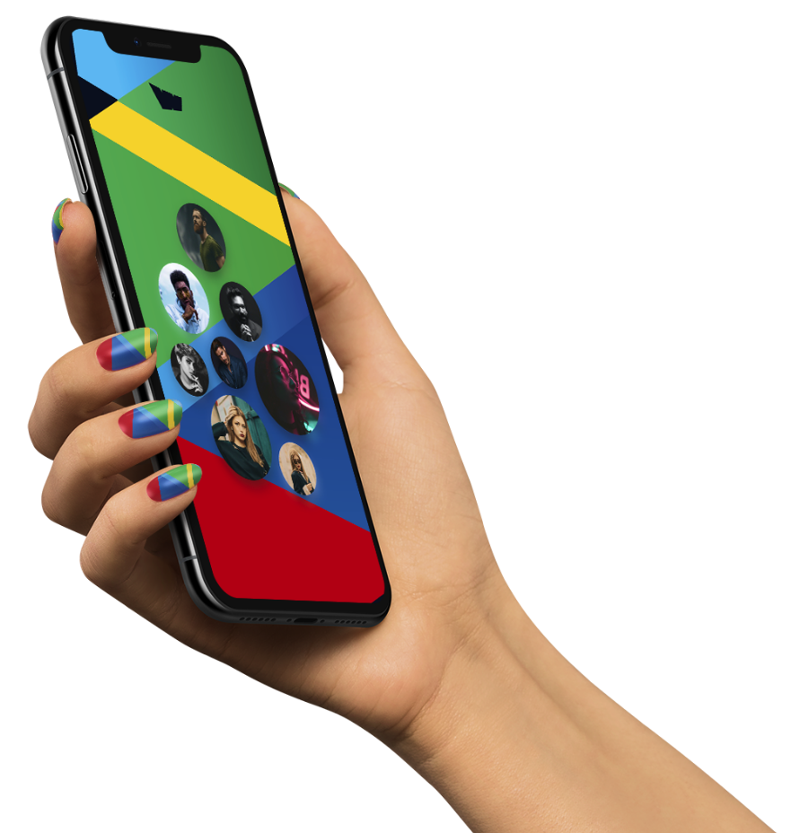

Reimagining social media through the power of the blockchain.
We are creating social media 3.0 with influencers, celebrities and creators being able to launch their
own digital currency by simply creating a profile with media content posted as Non fungible Tokens that
can be owned and traded on the Tknrs network
For Creators
Creators can gain independence through a decentralised digital currency system that is dependent on
growing and engaging with the community and also their star power. They own 10-15% of the total value of
the tokens minted.
Holding social tokens allows the individual to gain access to benefits including unreleased
content, private communities, direct access to celebrity, early- access to tickets and more as well as
the ability to trade with other communities in order to gain access to more creator content with early
token buyers being the biggest winners as the value of the token increases with more buyers.
We would only launch tokens with the express permission of the creators.
There are several thousand celebrities and creators on twitter, tiktok,
Instagram and YouTube with
followings in the millions who we would be actively engaging before we go viral.
We would get them on our
platform and they would see the opportunity to create a fan driven digital economy where their digital
content can be traded as NFTs and their most loyal fans can have the monetary value of their creator's
currency increase significantly as they promote their digital currency across their channels while our
native token holders benefit from the Weentar popularity.
Q1
2021
01
Team set-up
02
Launch of informational website
Q1
2021
01
Presale and exchange listings
02
Blockchain development and launch
03
Launch of our MVP
04
Influencer agency partnerships
05
Marketing and promotion
Q1
2021
01
Celebrity, Creator and Influencer partnerships
02
Expansion of creator communities on our platform
03
More Marketing and promotion
Q1
2021
01
Celebrity, Creator and Influencer partnerships
02
Expansion of creator communities on our platform
03
More Marketing and promotion
Tokner is coming
Cryptocurrency adoption is at less than 1% of the global world
population with some countries and
entities actively fighting against its mass adoption and the smartest developers and nerds holding
the fort.
Bitcoin was the first, and it has since grown to thousands of
tokens launched all aiming to fix one
problem or the other with some quite simply FOMOing the moment. Our goal is to bring mass adoption
to the cryptocurrency space by dumbing it down. How far down? So down that even a celebrity can
explain it in simple words to their followers and have them download an app, buy into the social
currency of their favourite person and watch their
investment as is with other crypto currency project.
We are trying to do to this space what investment apps did for the
"nonexistent retail investors". We
are gamefying digital currency, bringing in popular faces instead of hard to understand projects to
make it the norm and inadvertently being the "gateway drug" for a lot of people to finally give this
space a real look.
A new digital economy is coming. People would be just as powerful
as countries and creators would be
paid beyond the peanuts that conventional social media platforms can offer.
There would be new markets and advertisers with little to offer
would not find home there. Like Kanye
said,
"Personalities would become the new currency, and services would be
built on top of them".
Well, Kanye didn't exactly say that, but it sounds like something
we hope he would say.
Currency is digital, it has been that way for a while now, but
this
time there would be no dead
presidents on the money, there would people like you on the money, and you would own it because it
would make the most sense in the world.

Presale Details
01
Phase One
0/04/2021 - 16/04/2021
1 BNB = 100000 WNTR
Soft cap: 5000 BNB
Hard cap: 10000 BNB
01
Phase One
0/04/2021 - 16/04/2021
1 BNB = 100000 WNTR
Soft cap: 5000 BNB
Hard cap: 10000 BNB
01
Phase One
0/04/2021 - 16/04/2021
1 BNB = 100000 WNTR
Soft cap: 5000 BNB
Hard cap: 10000 BNB
First Connect your Metamask or TrustWallet to the "Connect Wallet" on the Homepage.
Then send minimum of 0.1 BNB or maximum of 10 BNB to the Presale wallet
Then after you will received your $WNTR to your address within 24hours.